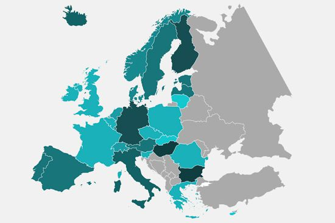

Tech: D3, GDAL, TopoJSON
Tech: ES6, Gulp, Highcharts, lazysizes, lodash, ScrollMagic
Tech: Excel, Handlebars, Highcharts
Tech: Google Street View Image API, jQuery, Skeleton
Tech: Handlebars, Waypoints
Tech: Compass, Handlebars, lodash
Tech: Custom Font, Excel, Handlebars, Highcharts, Moment
Tech: Excel, Handlebars, Highcharts, Moment
Tech: bxSlider, Handlebars, jQuery UI, PHP
Tech: jQuery, Node, x-ray
Tech: Bootstrap, Handlebars, Highcharts, slick
Tech: Bootstrap, Excel, Handlebars, Highcharts, lodash, Moment